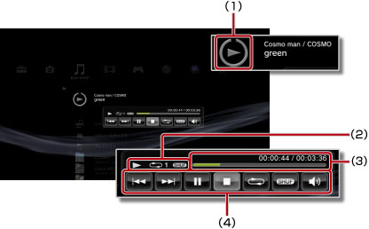

ミュージック > ミニ操作パネルを使う
ミニ操作パネルを使う
音楽を再生中に、ミニ操作パネルで基本的な操作ができます。
1. |
音楽を再生中に、PSボタンを押す。 |
||||||||
|---|---|---|---|---|---|---|---|---|---|
2. |
方向キーで、 
|
ヒント
- 再生中のアイコンは、
 （ミュージック）の一番上に表示されます。
（ミュージック）の一番上に表示されます。 - ミニ操作パネルを表示中に
 ボタンを押すと、音楽を再生したままミニ操作パネルを非表示にできます。
ボタンを押すと、音楽を再生したままミニ操作パネルを非表示にできます。
前

再生中のコンテンツ、または、前のコンテンツの最初に戻ります。
次
次のコンテンツの最初に移動します。
一時停止
再生を一時止めます。
停止
再生を止め、ミニ操作パネルを閉じます。
シャッフル
ランダムな順番で再生します。
リピート
繰り返し再生します。 ボタンを押すたびに、次の3段階に切りかえられます。
ボタンを押すたびに、次の3段階に切りかえられます。
 |
1つのコンテンツを繰り返して再生する |
|---|---|
|
すべてのコンテンツを繰り返して再生する |
| 表示なし | リピートを解除し、最後のコンテンツまで順番に再生する |
音量調整
（ミュージック）で再生するコンテンツの音声出力レベルを設定します。9段階に調整できます。
ヒント
音量出力レベルを上げすぎると音割れすることがあります。その場合は、音量出力レベルを下げてください。